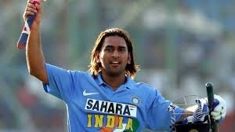

MS DHONI | Cricketer
ABOUT DHONI
Mahendra Singh Dhoni (born 7 July 1981) is a former international cricketer who played as a right-handed wicketkeeper batsman. His power hitting ability and offensive batting style made his reputation as a finisher. He is widely considered as one of the greatest white ball cricket captain ever.[3] He captained the Indian national cricket team in limited-overs formats from 2007 to 2017 and in Test cricket from 2008 to 2014. He led the team to three ICC titles (2007 ICC World Twenty20, 2011 ICC Cricket World Cup and 2013 ICC Champions Trophy) and brought the Indian cricket team to number one position in ICC test rankings in 2009.[4][5] He is current captain of Chennai super king in IPL. He also led CSK to win the 2010, 2011, 2018 and 2021 editions of IPL.
Dhoni made his ODI debut on 23 December 2004 against Bangladesh, and played his first Test a year later against Sri Lanka. In 2007, he took over the ODI captaincy from Rahul Dravid. In test cricket his captaincy record was mixed, successfully leading India to series win against New Zealand (in 2009) and the Border-Gavaskar Trophy (home series in 2010 and 2013) against Australia while losing to Sri Lanka, Australia, England, and South Africa by big margins in away conditions.
Captain COOL | MSD | Mahi Ji
wiki
M.S. Dhoni: The Untold Story is a 2016 Indian Hindi-language biographical sports drama film written and directed by Neeraj Pandey. It is based on the life of former Test, ODI and T20I captain of the Indian national cricket team, Mahendra Singh Dhoni. The film stars the late Sushant Singh Rajput as Dhoni, along with Disha Patani, Kiara Advani, and Anupam Kher. The film chronicles the life of Dhoni from a young age through a series of life events.
The idea of the biopic was put forward by Dhoni's manager, Arun Pandey, after encountering an incident at an airport after the 2011 Cricket World Cup Final. Development began two years later, with the consent of Dhoni. Neeraj Pandey was later approached to helm the film while he was working on Baby. Pandey recruited a number of people for researching into Dhoni's background and his life events. Dhoni eventually became a consultant on the film.
The film was released on 30 September 2016 by Fox Star Studios and received the widest release ever for a Bollywood film across 61 countries. In addition to being released in Hindi language, it was also dubbed in Tamil, Telugu, and Marathi languages, although the Marathi release was later cancelled due to opposition. Upon release, the film became a critical and commercial success. It is currently the fifth highest-grossing Bollywood film of 2016 in India with ₹1.16 billion (US$15 million).